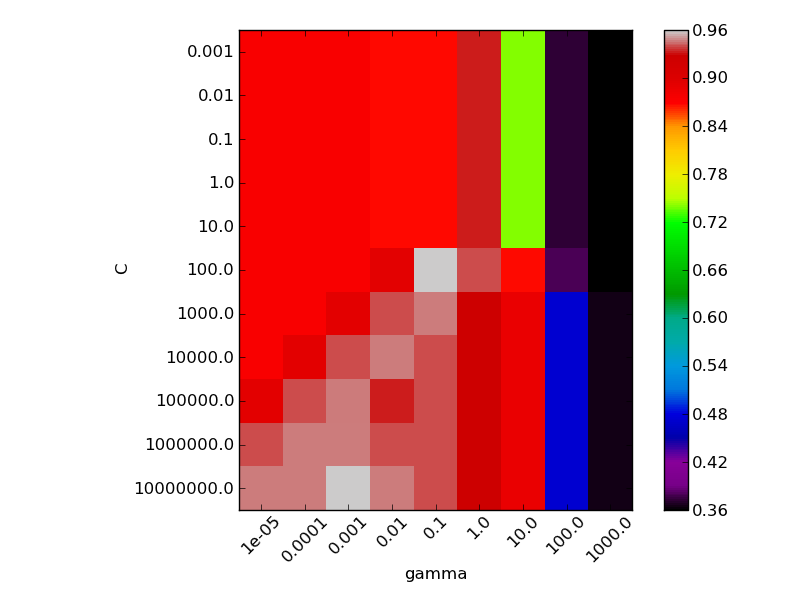

Seleting hyper-parameter C and gamma of a RBF-Kernel SVM¶
For SVMs, in particular kernelized SVMs, setting the hyperparameter is crucial but non-trivial. In practice, they are usually set using a hold-out validation set or using cross validation.
This example shows how to use stratified K-fold crossvalidation to set C and gamma in an RBF-Kernel SVM.
We use a logarithmic grid for both parameters.
Script output:
('The best classifier is: ', SVC(C=100.0, cache_size=200, class_weight=None, coef0=0.0, degree=3,
gamma=0.10000000000000001, kernel='rbf', probability=False, scale_C=True,
shrinking=True, tol=0.001))
Python source code: plot_svm_parameters_selection.py
print __doc__
import numpy as np
import pylab as pl
from sklearn.svm import SVC
from sklearn.preprocessing import Scaler
from sklearn.datasets import load_iris
from sklearn.cross_validation import StratifiedKFold
from sklearn.grid_search import GridSearchCV
iris_dataset = load_iris()
X, Y = iris_dataset.data, iris_dataset.target
# It is usually a good idea to scale the data for SVM training.
# We are cheating a bit in this example in scaling all of the data,
# instead of fitting the transformation on the trainingset and
# just applying it on the test set.
scaler = Scaler()
X = scaler.fit_transform(X)
# For an initial search, a logarithmic grid with basis
# 10 is often helpful. Using a basis of 2, a finer
# tuning can be achieved but at a much higher cost.
C_range = 10. ** np.arange(-3, 8)
gamma_range = 10. ** np.arange(-5, 4)
param_grid = dict(gamma=gamma_range, C=C_range)
grid = GridSearchCV(SVC(), param_grid=param_grid, cv=StratifiedKFold(y=Y, k=5))
grid.fit(X, Y)
print("The best classifier is: ", grid.best_estimator_)
# plot the scores of the grid
# grid_scores_ contains parameter settings and scores
score_dict = grid.grid_scores_
# We extract just the scores
scores = [x[1] for x in score_dict]
scores = np.array(scores).reshape(len(C_range), len(gamma_range))
# Make a nice figure
pl.figure(figsize=(8, 6))
pl.subplots_adjust(left=0.15, right=0.95, bottom=0.15, top=0.95)
pl.imshow(scores, interpolation='nearest', cmap=pl.cm.spectral)
pl.xlabel('gamma')
pl.ylabel('C')
pl.colorbar()
pl.xticks(np.arange(len(gamma_range)), gamma_range, rotation=45)
pl.yticks(np.arange(len(C_range)), C_range)
pl.show()